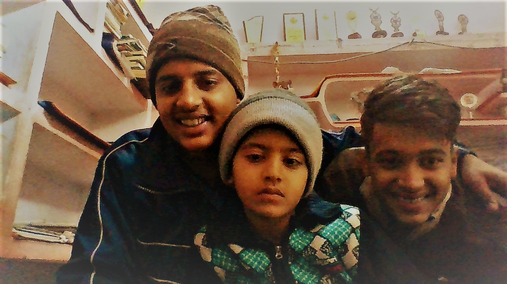

WELCOME
here is where you are coming back
We have provided various types of English essays (such as Education, India, Science & Technology, Animals, Festivals, National Days, Social Issues & Social Awareness, Personalities/People, Monuments, Relationships, Sports, Environmental Issues, Proverb, Moral Values, Nature and Essay on Health, etc) for students of lower and higher classes. Such type of essays can be very helpful for parents to make their kids actively participating in the extra-curricular activities including essay writing, debate, discussion, etc. These Essays are written in very simple and easy language using very easy words. These are easily understandable by any student. Such essays may help and motivate students to know about the Indian cultures, heritages, monuments, famous places, importance of teachers, mothers, animals, traditional festivals, events, occasions, famous personalities, legends, social issues and so many other topics. We have provided very unique and general topics essay which are generally assigned to students in the school. ESSAY TOPICS IN ENGLISH Following are different types of essay topics in English for students which are categorized in many sections so that you can easily chose the topic as per your need and requirement. General Essay Essay on Generation Gap Globalization Essay Essay on Music Essay on My Hobby Essay on Money Essay on Newspaper Essay on City Life Vs Village Life Essay on Leadership Essay on Agriculture Essay on Black Money Essay on My Dream Essay on Doctor Essay on Who Am I Essay on Youth Essay on Bank Essay on Man Essay on Role Model Essay on Newspaper and Its Uses Essay on Impact of Cinema in Life We have provided various types of English essays (such as Education, India, Science & Technology, Animals, Festivals, National Days, Social Issues & Social Awareness, Personalities/People, Monuments, Relationships, Sports, Environmental Issues, Proverb, Moral Values, Nature and Essay on Health, etc) for students of lower and higher classes. Such type of essays can be very helpful for parents to make their kids actively participating in the extra-curricular activities including essay writing, debate, discussion, etc. These Essays are written in very simple and easy language using very easy words. These are easily understandable by any student. Such essays may help and motivate students to know about the Indian cultures, heritages, monuments, famous places, importance of teachers, mothers, animals, traditional festivals, events, occasions, famous personalities, legends, social issues and so many other topics. We have provided very unique and general topics essay which are generally assigned to students in the school. ESSAY TOPICS IN ENGLISH Following are different types of essay topics in English for students which are categorized in many sections so that you can easily chose the topic as per your need and requirement. General Essay Essay on Generation Gap Globalization Essay Essay on Music Essay on My Hobby Essay on Money Essay on Newspaper Essay on City Life Vs Village Life Essay on Leadership Essay on Agriculture Essay on Black Money Essay on My Dream Essay on Doctor Essay on Who Am I Essay on Youth Essay on Bank Essay on Man Essay on Role Model Essay on Newspaper and Its Uses Essay on Impact of Cinema in Life We have provided various types of English essays (such as Education, India, Science & Technology, Animals, Festivals, National Days, Social Issues & Social Awareness, Personalities/People, Monuments, Relationships, Sports, Environmental Issues, Proverb, Moral Values, Nature and Essay on Health, etc) for students of lower and higher classes. Such type of essays can be very helpful for parents to make their kids actively participating in the extra-curricular activities including essay writing, debate, discussion, etc. These Essays are written in very simple and easy language using very easy words. These are easily understandable by any student. Such essays may help and motivate students to know about the Indian cultures, heritages, monuments, famous places, importance of teachers, mothers, animals, traditional festivals, events, occasions, famous personalities, legends, social issues and so many other topics. We have provided very unique and general topics essay which are generally assigned to students in the school. ESSAY TOPICS IN ENGLISH Following are different types of essay topics in English for students which are categorized in many sections so that you can easily chose the topic as per your need and requirement. General Essay Essay on Generation Gap Globalization Essay Essay on Music Essay on My Hobby Essay on Money Essay on Newspaper Essay on City Life Vs Village Life Essay on Leadership Essay on Agriculture Essay on Black Money Essay on My Dream Essay on Doctor Essay on Who Am I Essay on Youth Essay on Bank Essay on Man Essay on Role Model Essay on Newspaper and Its Uses Essay on Impact of Cinema in Life We have provided various types of English essays (such as Education, India, Science & Technology, Animals, Festivals, National Days, Social Issues & Social Awareness, Personalities/People, Monuments, Relationships, Sports, Environmental Issues, Proverb, Moral Values, Nature and Essay on Health, etc) for students of lower and higher classes. Such type of essays can be very helpful for parents to make their kids actively participating in the extra-curricular activities including essay writing, debate, discussion, etc. These Essays are written in very simple and easy language using very easy words. These are easily understandable by any student. Such essays may help and motivate students to know about the Indian cultures, heritages, monuments, famous places, importance of teachers, mothers, animals, traditional festivals, events, occasions, famous personalities, legends, social issues and so many other topics. We have provided very unique and general topics essay which are generally assigned to students in the school. ESSAY TOPICS IN ENGLISH Following are different types of essay topics in English for students which are categorized in many sections so that you can easily chose the topic as per your need and requirement. General Essay Essay on Generation Gap Globalization Essay Essay on Music Essay on My Hobby Essay on Money Essay on Newspaper Essay on City Life Vs Village Life Essay on Leadership Essay on Agriculture Essay on Black Money Essay on My Dream Essay on Doctor Essay on Who Am I Essay on Youth Essay on Bank Essay on Man Essay on Role Model Essay on Newspaper and Its Uses Essay on Impact of Cinema in Life We have provided various types of English essays (such as Education, India, Science & Technology, Animals, Festivals, National Days, Social Issues & Social Awareness, Personalities/People, Monuments, Relationships, Sports, Environmental Issues, Proverb, Moral Values, Nature and Essay on Health, etc) for students of lower and higher classes. Such type of essays can be very helpful for parents to make their kids actively participating in the extra-curricular activities including essay writing, debate, discussion, etc. These Essays are written in very simple and easy language using very easy words. These are easily understandable by any student. Such essays may help and motivate students to know about the Indian cultures, heritages, monuments, famous places, importance of teachers, mothers, animals, traditional festivals, events, occasions, famous personalities, legends, social issues and so many other topics. We have provided very unique and general topics essay which are generally assigned to students in the school. ESSAY TOPICS IN ENGLISH Following are different types of essay topics in English for students which are categorized in many sections so that you can easily chose the topic as per your need and requirement. General Essay Essay on Generation Gap Globalization Essay Essay on Music Essay on My Hobby Essay on Money Essay on Newspaper Essay on City Life Vs Village Life Essay on Leadership Essay on Agriculture Essay on Black Money Essay on My Dream Essay on Doctor Essay on Who Am I Essay on Youth Essay on Bank Essay on Man Essay on Role Model Essay on Newspaper and Its Uses Essay on Impact of Cinema in Life We have provided various types of English essays (such as Education, India, Science & Technology, Animals, Festivals, National Days, Social Issues & Social Awareness, Personalities/People, Monuments, Relationships, Sports, Environmental Issues, Proverb, Moral Values, Nature and Essay on Health, etc) for students of lower and higher classes. Such type of essays can be very helpful for parents to make their kids actively participating in the extra-curricular activities including essay writing, debate, discussion, etc. These Essays are written in very simple and easy language using very easy words. These are easily understandable by any student. Such essays may help and motivate students to know about the Indian cultures, heritages, monuments, famous places, importance of teachers, mothers, animals, traditional festivals, events, occasions, famous personalities, legends, social issues and so many other topics. We have provided very unique and general topics essay which are generally assigned to students in the school. ESSAY TOPICS IN ENGLISH Following are different types of essay topics in English for students which are categorized in many sections so that you can easily chose the topic as per your need and requirement. General Essay Essay on Generation Gap Globalization Essay Essay on Music Essay on My Hobby Essay on Money Essay on Newspaper Essay on City Life Vs Village Life Essay on Leadership Essay on Agriculture Essay on Black Money Essay on My Dream Essay on Doctor Essay on Who Am I Essay on Youth Essay on Bank Essay on Man Essay on Role Model Essay on Newspaper and Its Uses Essay on Impact of Cinema in Life We have provided various types of English essays (such as Education, India, Science & Technology, Animals, Festivals, National Days, Social Issues & Social Awareness, Personalities/People, Monuments, Relationships, Sports, Environmental Issues, Proverb, Moral Values, Nature and Essay on Health, etc) for students of lower and higher classes. Such type of essays can be very helpful for parents to make their kids actively participating in the extra-curricular activities including essay writing, debate, discussion, etc. These Essays are written in very simple and easy language using very easy words. These are easily understandable by any student. Such essays may help and motivate students to know about the Indian cultures, heritages, monuments, famous places, importance of teachers, mothers, animals, traditional festivals, events, occasions, famous personalities, legends, social issues and so many other topics. We have provided very unique and general topics essay which are generally assigned to students in the school. ESSAY TOPICS IN ENGLISH Following are different types of essay topics in English for students which are categorized in many sections so that you can easily chose the topic as per your need and requirement. General Essay Essay on Generation Gap Globalization Essay Essay on Music Essay on My Hobby Essay on Money Essay on Newspaper Essay on City Life Vs Village Life Essay on Leadership Essay on Agriculture Essay on Black Money Essay on My Dream Essay on Doctor Essay on Who Am I Essay on Youth Essay on Bank Essay on Man Essay on Role Model Essay on Newspaper and Its Uses Essay on Impact of Cinema in Life We have provided various types of English essays (such as Education, India, Science & Technology, Animals, Festivals, National Days, Social Issues & Social Awareness, Personalities/People, Monuments, Relationships, Sports, Environmental Issues, Proverb, Moral Values, Nature and Essay on Health, etc) for students of lower and higher classes. Such type of essays can be very helpful for parents to make their kids actively participating in the extra-curricular activities including essay writing, debate, discussion, etc. These Essays are written in very simple and easy language using very easy words. These are easily understandable by any student. Such essays may help and motivate students to know about the Indian cultures, heritages, monuments, famous places, importance of teachers, mothers, animals, traditional festivals, events, occasions, famous personalities, legends, social issues and so many other topics. We have provided very unique and general topics essay which are generally assigned to students in the school. ESSAY TOPICS IN ENGLISH Following are different types of essay topics in English for students which are categorized in many sections so that you can easily chose the topic as per your need and requirement. General Essay Essay on Generation Gap Globalization Essay Essay on Music Essay on My Hobby Essay on Money Essay on Newspaper Essay on City Life Vs Village Life Essay on Leadership Essay on Agriculture Essay on Black Money Essay on My Dream Essay on Doctor Essay on Who Am I Essay on Youth Essay on Bank Essay on Man Essay on Role Model Essay on Newspaper and Its Uses Essay on Impact of Cinema in Life
So Basically This Website Is Nothing More Than An Experiment Being An Noob Trying To Learn Some Basics Of Web Devoloping Here Is Yo Guy VITTHAL MISHRA
I would just try my skills based on learning from COURSERA.COM by the tutor of JOHN HOPKINS UNIVERSITY would try my best to learn most let see how it goesyaha se pad lo